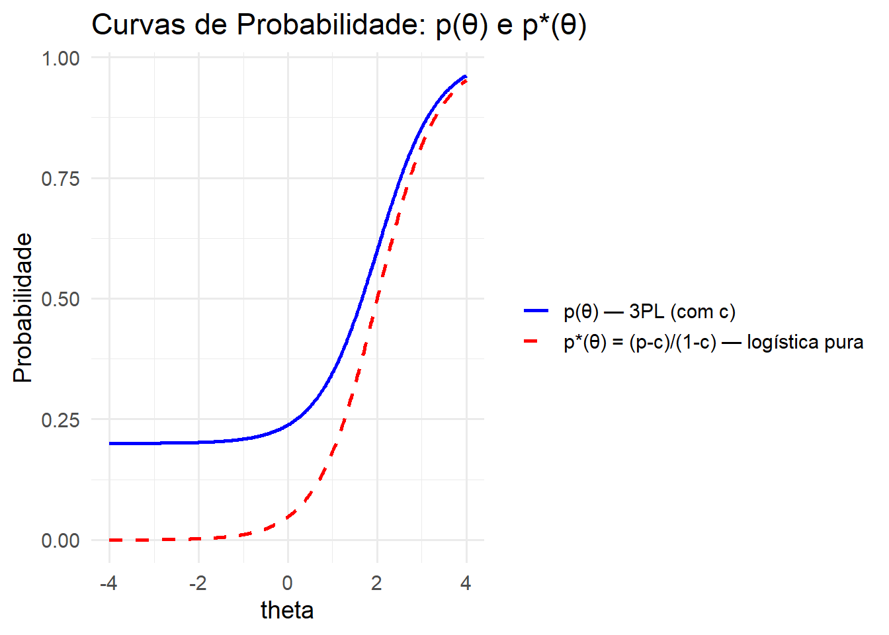
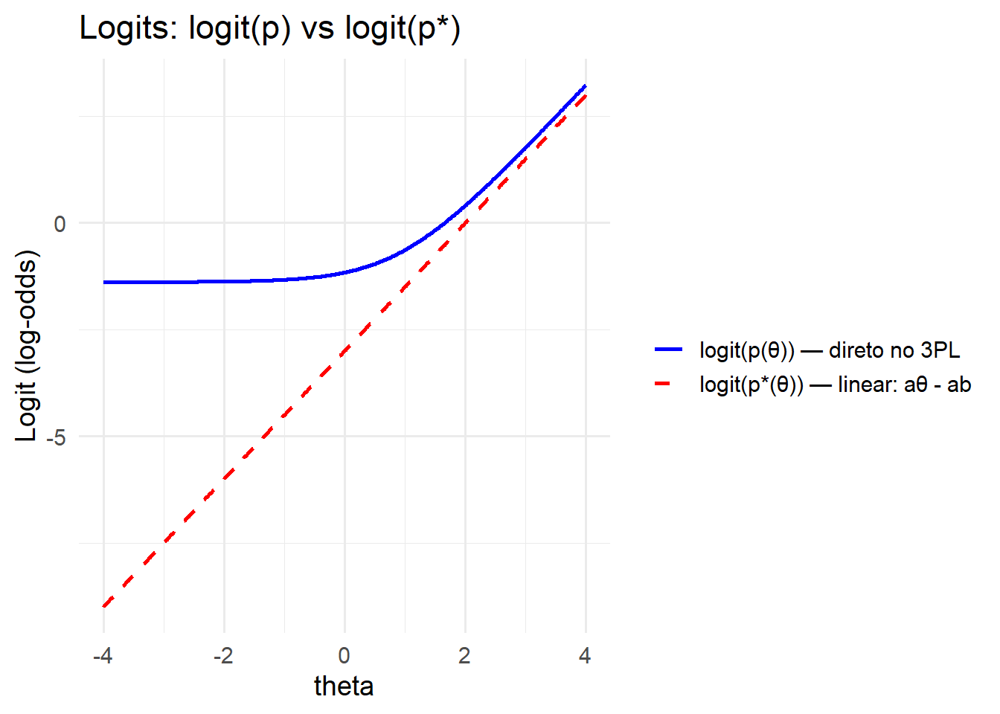

# Parâmetros
a <- 1.5
b <- 2
c <- 0.2
# Eixo de proficiência
theta <- seq(-4, 4, length.out = 401)
# Função logística
logistic <- function(z) 1 / (1 + exp(-z))
logistic <- function(z) exp(z) / (1 + exp(z))
# Linearização (logit)
logit <- function(x) log(x / (1 - x))
# Cálculos
z <- a * (theta - b)
p_star <- logistic(z) # p*(θ)
p <- c + (1 - c) * p_star # p(θ)
logit_p_star <- logit(p_star)
logit_p <- logit(p)
# ----------- 1. Curvas de probabilidade -----------
df_prob <- data.frame(theta, p, p_star)
ggplot(df_prob, aes(x = theta)) +
geom_line(aes(y = p, color = "p(θ) — 3PL (com c)"), size = 1) +
geom_line(aes(y = p_star, color = "p*(θ) = (p-c)/(1-c) — logística pura"), linetype = "dashed", size = 1) +
scale_color_manual(values = c("p(θ) — 3PL (com c)" = "blue",
"p*(θ) = (p-c)/(1-c) — logística pura" = "red")) +
labs(y = "Probabilidade", color = "",
title = "Curvas de Probabilidade: p(θ) e p*(θ)") +
theme_minimal(base_size = 14)Warning: Using `size` aesthetic for lines was deprecated in ggplot2 3.4.0.
ℹ Please use `linewidth` instead.
# ----------- 2. Curvas do logit -----------
df_logit <- data.frame(theta, logit_p, logit_p_star)
ggplot(df_logit, aes(x = theta)) +
geom_line(aes(y = logit_p, color = "logit(p(θ)) — direto no 3PL"), size = 1) +
geom_line(aes(y = logit_p_star, color = "logit(p*(θ)) — linear: aθ - ab"), linetype = "dashed", size = 1) +
scale_color_manual(values = c("logit(p(θ)) — direto no 3PL" = "blue",
"logit(p*(θ)) — linear: aθ - ab" = "red")) +
labs(y = "Logit (log-odds)", color = "",
title = "Logits: logit(p) vs logit(p*)") +
theme_minimal(base_size = 14)
# ----------- 3. Checando a linearidade de logit(p*) -----------
modelo <- lm(logit_p_star ~ theta)
summary(modelo)Warning in summary.lm(modelo): ajuste essencialmente perfeito: resumo (summary)
pode não ser confiável
Call:
lm(formula = logit_p_star ~ theta)
Residuals:
Min 1Q Median 3Q Max
-3.376e-14 -3.090e-16 -1.040e-16 2.360e-16 4.160e-14
Coefficients:
Estimate Std. Error t value Pr(>|t|)
(Intercept) -3.000e+00 1.362e-16 -2.203e+16 <2e-16 ***
theta 1.500e+00 5.881e-17 2.551e+16 <2e-16 ***
---
Signif. codes: 0 '***' 0.001 '**' 0.01 '*' 0.05 '.' 0.1 ' ' 1
Residual standard error: 2.726e-15 on 399 degrees of freedom
Multiple R-squared: 1, Adjusted R-squared: 1
F-statistic: 6.506e+32 on 1 and 399 DF, p-value: < 2.2e-16cat("\nCoeficiente angular esperado (a):", a)
Coeficiente angular esperado (a): 1.5cat("\nIntercepto esperado (-a*b):", -a*b, "\n")
Intercepto esperado (-a*b): -3